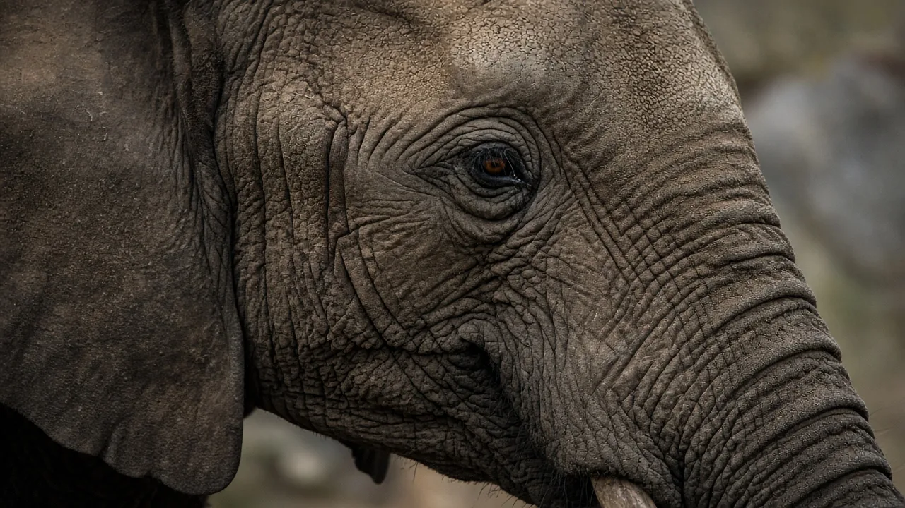

Do elephants have the best sense of smell?
Among the mammal genomes compared so far, the African elephant has the largest known set of working olfactory receptor genes - nearly 2,000 intact genes in a 2014 study, roughly twice as many as dogs in that same comparison. That genetic arsenal, plus a trunk that can sample air and ground scents and a well-developed vomeronasal system, makes elephants extraordinary smellers. Calling them the absolute 'best' still depends on which test you run, because gene count is not the same as a head-to-head behaviour score.

The short answer
Elephants are among the finest mammalian smellers yet measured. A genome-wide count found about 1,948 intact olfactory receptor (OR) genes in the African elephant - the largest repertoire in that 13-species comparison, and far above dogs and humans in the same study. Their trunks constantly sample the air and ground, and a second chemical sense (the vomeronasal organ) helps them read urine and other social signals. Gene count alone does not crown a single winner in every sniff test, but it explains why field biologists treat elephant noses with respect.
Nearly 2,000 smell genes
In 2014, Yoshihito Niimura, Atsushi Matsui and Kazushige Touhara published a survey of OR genes across 13 placental mammals in Genome Research. African elephants stood out: roughly 1,948 intact OR genes, with thousands more OR-related pseudogenes in the genome. Dogs in that comparison had on the order of 1,000 intact genes; humans and chimpanzees had only a few hundred. OR genes encode the receptor proteins that catch odor molecules in the nose. A larger, more diverse set is a strong hint that the animal can detect a wider chemical world.
The authors were careful not to claim that elephants beat every species in every behavioural assay. They did show that elephant OR clusters had expanded dramatically during evolution, consistent with a lifestyle that leans hard on scent for food, friends and danger.
Trunk, mucus and the second nose
Smell for an elephant is not only passive sniffing. The trunk can hover over a trail, suck air, or touch urine-soaked soil and then transfer a sample to the roof of the mouth, where the vomeronasal organ sits. Decades of work by L.E.L. Rasmussen and colleagues mapped how Asian elephants use chemicals such as frontalin during musth, and how trunk-to-mouth checks help males and females read reproductive state. That dual system - main olfactory epithelium plus vomeronasal pathway - is one reason social life in elephants is so richly chemical.
Long-distance communication also mixes scent with sound and seismic cues. See how elephants communicate over long distances and whether elephants have names for each other.
A macrosmatic brain
Gross anatomy agrees with the genetics. In a 2006 review of elephant brain morphology, Jeheskel Shoshani and colleagues described elephants as macrosmatic: the olfactory bulb and related rhinencephalon structures are large, matching a mammal that invests heavily in smell. Relative to humans, who are often called microsmatic, elephants keep a bigger share of neural hardware for odour.
What "best" does and does not mean
Popular headlines sometimes say elephants have the "best noses on Earth." The precise scientific claim from Niimura et al. is about gene repertoire size in the genomes they analysed. A bloodhound trained on a specific trail, or a moth tracking a pheromone, can still outperform an elephant on a narrow task. Elephants also combine smell with hearing, touch and sight; intelligence research summarised on our intelligence page shows how flexible that mix can be.
Still, if you ask which living land mammal packs the most OR gene diversity in a published comparative genomics study, the African elephant is the current record holder - and behaviour in the wild matches that investment.
The bottom line
Elephants smell extraordinarily well. About 2,000 intact olfactory receptor genes, a sampling trunk, a vomeronasal organ and a macrosmatic brain all point the same way. For more body systems, open the anatomy guide or the FAQ.
Frequently asked questions
Do elephants have the best sense of smell?
They have the largest olfactory receptor gene repertoire counted in a major mammal genome comparison (about 2,000 intact genes in African elephants). That strongly supports an exceptional sense of smell, though 'best' still depends on the behavioural test.
How many smell genes do elephants have compared with dogs?
In Niimura, Matsui and Touhara's 2014 Genome Research study, African elephants had about 1,948 intact olfactory receptor genes, more than twice the dog count in that dataset and several times the human count.
How do elephants use their trunks to smell?
The trunk draws air and can pick up liquid or solid scent samples. Elephants often place the trunk tip in the mouth to deliver chemicals to the vomeronasal organ (a flehmen-like check), especially when reading urine or other social odours.
Can elephants recognise people by smell?
Field experiments have shown African elephants distinguishing clothing odours linked to different human groups with different histories of conflict. Smell is one of several senses they use to judge risk.
Is an elephant's brain built for smell?
Yes. Anatomists describe elephants as macrosmatic: they have a large olfactory bulb and related structures compared with animals that rely less on smell.
Does a bigger gene count prove the best nose?
Not by itself. Gene repertoire sets an upper bound on receptor diversity. Behavioural discrimination tests, experience and which odours matter in the wild still decide real-world performance.
Sources
- Niimura, Y., Matsui, A. and Touhara, K. (2014). Extreme expansion of the olfactory receptor gene repertoire in African elephants and evolutionary dynamics of orthologous gene groups in 13 placental mammals. Genome Research 24(9), 1485 to 1496. DOI 10.1101/gr.169532.113
- Rasmussen, L. E. L. and Greenwood, D. R. (2003). Frontalin: a chemical message of musth in Asian elephants (Elephas maximus). Chemical Senses 28(5), 433 to 446. DOI 10.1093/chemse/28.5.433
- Shoshani, J., Kupsky, W. J. and Marchant, G. H. (2006). Elephant brain. Part I: Gross morphology, functions, comparative anatomy, and evolution. Brain Research Bulletin 70(2), 124 to 157. DOI 10.1016/j.brainresbull.2006.03.016
Cite this page
APA
TuskWise. (2026, November 5). Do elephants have the best sense of smell? https://tuskwise.com/blog/do-elephants-have-the-best-sense-of-smell.html
MLA
“Do elephants have the best sense of smell?” TuskWise, 5 Nov. 2026, tuskwise.com/blog/do-elephants-have-the-best-sense-of-smell.html.
Chicago
TuskWise. “Do elephants have the best sense of smell?” TuskWise. Last modified November 5, 2026. https://tuskwise.com/blog/do-elephants-have-the-best-sense-of-smell.html.